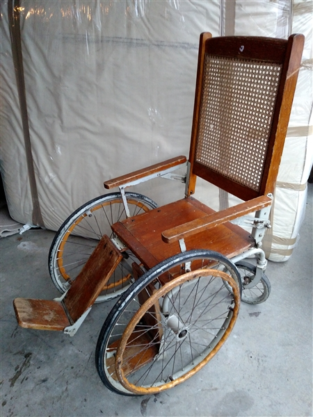

Return to CIS Database
Entity Record File #: 002
Object Class:
Anomalous Effects: Regeneration, Inflict Internal Injury
Containment Protocols:
002 is to be kept in a standard containment unit, all personnel under a L-2 Clearance level are forbidden
from entering the containment unit. 002 is to only be tested in designated areas, Testing on living or
organic targets is only to be conducted under the approval of ———-
Description:
002 is a 1940’s War Era Antique Colson Corp 4 Wheel Wood wheelchair with no discernible features, when a individual sits on the
chair it will cause the snapping of the Lumbar and Sacral area of the spine, leaving the person paralyzed from the waist
and below. Examinations of the atomic structure of 002 have proved inconclusive. The materials used to create 002 have no
anomalous properties, and it is unknown on how 002 is able to inflict injuries on the person sitting on it. 002 exhibits minor
anomalous properties for the exception of [ Read below ] upon the person being seated, i.e. the ability to undergo continual
self-healing. Any component of an anomaly that is marked, damaged, removed or in any way modified is immediately replaced
with an identical component prior to modification or damage.
upon person being seated on 002 they are now classified as 002-1, 002-1 spine structure is then heavily damage leaving 002-1's
lower body paralyzed, usually accompanied by the emission of a large amount of bone dust which upon further examination
shows that the bone dust belongs to the person who had interacted with 002. The effects of RPC-002-1 are accentuated on chemically
pure targets. The object is able to cause injury to people weighing up to 450 kg
Due to 002's nature and it being easy to contain, this Entity is registered as safe.
